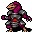
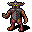

酸 Acid
英語版 CrawlWiki の記事「Acid」(0.34 向け、2026-09-22 版)の翻訳です。原文の著者は編集履歴をご覧ください。
酸はダメージの種類のひとつで、おもにジェリー類や酸を吐く竜族が使ってくる。腐食への耐性で軽減できる。酸のダメージの多くは一時的な腐食の状態を引き起こし、AC と殺戮が下がる。
酸の発生源
酸の近接攻撃
次のモンスターは酸の近接攻撃を持ち、腐食させてくることがある。
酸の近接攻撃は「酸しぶき」(acid splash)を起こすことがあり、そのときは「酸が焼けつく！」というメッセージが出る。プレイヤーは 4d3 の追加ダメージを受けるが、モンスターが受けるのは 2d4 だけだ。
酸性の肉体
体が酸でできているモンスターもいて、近接武器で攻撃すると酸しぶきが飛ぶ。近接攻撃に付く追加の酸しぶきと同じもので、プレイヤーには 4d3 だ。
酸の唾
次のモンスターは遠隔攻撃として酸の唾を使う。AC を無視する 3d14 の酸のダメージを与え、腐食させることもある。
プレイヤーが黄色のドラコニアンなら、酸の飛沫の能力が使える。酸の唾に似ているが、周りの敵にもまとめて当たる。酸の唾にも酸の飛沫の能力にも、近接攻撃のような酸しぶきは付かない。
腐食の矢
呪文腐食の矢は大きな酸のダメージを与え、腐食させることもある。これを唱えるモンスターは何種類かいるし、強酸のワンドを拾ったものなら何でも撃ってくる。
腐食の矢を唱える敵は次のとおり。
- L
 太古のリッチ(3d39 のダメージ)
太古のリッチ(3d39 のダメージ) - e
 闇エルフの魔道士(3d23 のダメージ)
闇エルフの魔道士(3d23 のダメージ) - T
 月世界のトロル(3d27 のダメージ)
月世界のトロル(3d27 のダメージ) - D
.png) 地獄のサーペント(ディース)(3d27 のダメージ)
地獄のサーペント(ディース)(3d27 のダメージ) - Q

天狗の掠奪者(3d27 のダメージ)

呪文セットによっては腐食の矢を唱えることがある敵は次のとおり。
- &
 パンデモニウムの君主(確率 5.2%)
パンデモニウムの君主(確率 5.2%)
酸性の霧
酸性の霧は雲の一種で、運悪く中に立っているものに酸のダメージを与えて腐食させる。発生源は、高いパワーで使った凝結の風見と、酸性の霧のオーラをまとったパンデモニウムの君主だけだ。
腐食への耐性
腐食への耐性があると、酸から受けるダメージが減り、腐食の効果も小さくなる。酸性の霧の雲も効かなくなる。
腐食への耐性が得られるのは次のものだ。
- 黄色のドラコニアンであること
- 耐腐食のクロークと盾
- 腐食阻止の指輪
- アシッドドラゴンの鱗一式
- rCorr の付いたアーティファクト
- 耐性の薬
- ティアマトの竜の皮のクローク(攻撃ごとに 50% の確率)
- 黄色の鱗の変異がレベル 3 になっていること
- ジーヴァの信者で、信仰心が ** 以上あること
ダメージの軽減
腐食への耐性を持つプレイヤーは、酸のダメージが 50% になり、受ける腐食も通常の半分ですむ。酸と腐食に耐性のあるモンスターは受けるダメージが 50% 減り、50% の確率で腐食の状態を防ぐ。酸と腐食が効かないモンスターはダメージをまったく受けず、腐食することもない。
腐食
腐食は一時的な状態異常だ。
プレイヤーが腐食すると、続いているあいだダメージのロールと AC に -4 がかかり、これは重ねがけされる。腐食への耐性があれば、1 回ごとのペナルティは -2 ですむ。腐食はどれも、十分に時間がたてば元に戻る。無力化の薬や、そのほかの効果を打ち消す手段(ヤーラの強制魔法解除術、水銀の矢)を使えば、すぐに消せる。
酸のダメージのほかに、次のものでもプレイヤーは腐食する。
- 腐食させる攻撃を持つ敵に殴られる(4

錆の悪魔、& ディスペータ、一部の & パンデモニウムの君主)。
ディスペータ、一部の & パンデモニウムの君主)。 - B
 エントロピーの編み手や 6
エントロピーの編み手や 6  悪魔の血族の堕落者が唱えるエントロピーの紋様の呪文
悪魔の血族の堕落者が唱えるエントロピーの紋様の呪文 - *Corrode の特性を持つアーティファクトを身に着けてダメージを受ける(*Corrode 1 つにつき 3% の確率)。
- 鍛造術の呪文の失敗
- 貪食者の罠を踏む。または、視界内のモンスターがそれを踏む。
- スライムに覆われた岩の壁に隣接する(隣接する壁 1 枚につき腐食 +4。壁から離れればすぐに止まる。腐食への耐性では減らせず、モンスターには、プレイヤーの召喚したものも含めて効かない)。

腐食したモンスターは、一時的に AC が -8 される。これは重ねがけされない。さらに腐食させても持続時間が延びるだけだ。 rCorr+(「酸と腐食に耐性がある」)のモンスターは 50% の確率で腐食に抵抗し、rCorr+++(「酸と腐食が効かない」)のモンスターは決して腐食しない。
変更履歴
- 0.34 より前は、耐腐食のエゴは保存という名前で、クロークにしか付かなかった。
- 0.33 より前は、rCorr+++ のモンスターでも手段によっては腐食させられた。また、酸の雲の中に立っていても、プレイヤーが腐食する確率はターンごとに 50% しかなかった。
- 0.32 より前は、腐食への耐性で腐食の効果は減らなかった。そのかわり、腐食を 1 回受けるたびに 50% の確率で防いでいた。
- 0.30 より前は、スライムの穴ぐらのスライムに覆われた壁は、プレイヤーを直接腐食させるのではなく酸のダメージを与えていた。
- 0.28 より前は、酸の唾、酸の飛沫、腐食の矢にも追加の酸しぶきが付いていた(プレイヤーには 4d5、モンスターには 2d4 の追加ダメージ)。そのぶん基本のダメージは低めだった。
- 0.15 より前は、腐食は武器や防具に永続的な損傷を与え、強化値を下げていた。マイナスになることもあった。また、耐性の薬では rAcid も rCorr も得られなかった。
- 以前は酸への耐性が 3 段階あり、段階が上がるごとに酸のダメージが減っていた。今は 1 段階だけになり、腐食への耐性と一本化されている。
- 以前の版では、身に着けている防具が少ないほど酸しぶきのダメージが大きかった(ダイス 2 個に、空いている防具の部位ごとに 1 個追加)。クロークがあると、空いている部位ごとに 50% の確率でこの追加ダメージを打ち消せた。また、毛皮の変異があるとダメージが減った。